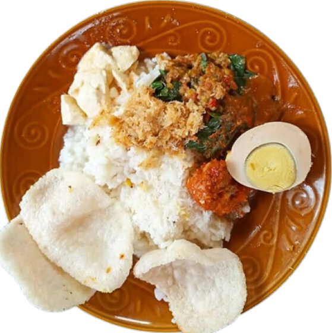

Mashita's Hometown
{kind=link}
{kind=link}
{kind=link}
{kind=link}
{kind=link}
{kind=link}
{kind=link}
Majestic Banyuwangi
Banyuwangi, is a regency located in East Java Province, Indonesia. Its capital city is
Banyuwangi District, often referred to as Banyuwangi City. This regency is situated at the
easternmost tip of Java Island, in the Tapal Kuda region. It shares its borders with Situbondo Regency
and Bondowoso Regency to the north, Bali Strait (Province of Bali) to the east, the Indian Ocean to the south,
and Jember Regency and Bondowoso Regency to the west. Banyuwangi Regency is the largest regency in East Java.
Banyuwangi
Traditional Dishes
- All
- Broth Food
- Fried Food
Ayam Pedas
True to its name, "spicy chicken" is a culinary dish that uses chicken meat as its main ingredient and has a spicy flavor. This spicy chicken relies on extremely spicy seasonings with a blend of coconut milk that might make you want to have extra rice.
Pecel Rawon
"Pecel Rawon" is another unique culinary delight, as it combines two distinct dishes on one plate. Rawon, known for its rich and delicious flavors, is mixed with Pecel, creating a delightful and satisfying combination.
Rujak Soto
One of the unique and fascinating traditional dishes from Banyuwangi is Rujak Soto. What makes it distinctive is that it doesn't use the typical fruit-based but rather a mix of vegetable combined with beef or tripe.

Sego Cawuk
"Sego Cawuk" is a typical Banyuwangi mixed rice with a savory broth and a sweet taste. The name "cawuk" itself is given because initially, this soupy dish is eaten using hands, hence it's called "cawuk."

Sego Tempong
Is a type of spicy sambal rice that is so intensely hot that it feels like being slapped. The fresh spiciness of the sambal is complemented with various side dishes and vegetables such as jambal fish, fresh vegetables, and kesrut soup.
Tourist Destinations
Ijen Crater
The beauty of Mount Ijen with its world-renowned natural phenomenon is undeniable. The Blue Fire is one of the main attractions of Mount Ijen, as night falls, it reveals the blue flames emerging from the depths of the Ijen crater.
Location
De Djawatan
De Djawatan is a tourist destination that is originally a protected forest area owned by Perhutani. This tourist spot offers beautiful scenery and cool air, making it a safe and comfortable choice for a vacation.
Location
Wedi Ireng
Wedi Ireng Beach is located near Pulau Merah Beach and Teluk Hijau Beach. In fact, there is a similarity between Wedi Ireng Beach and Teluk Hijau Beach. They both have a W shape, but this beach has a longer coastline.
Location
Pulau Tabuhan
Is an uninhabited island with incredibly beautiful coastal scenery. The beaches on Pulau Tabuhan feature soft white sand and are surrounded by lush green trees. The island spans approximately 6 hectares.
Location
Baluran National Park
Baluran National Park was discovered by a Dutchman named A.H. Loedeboer in 1937. Since then, the colonial government of the Netherlands designated this area as a wildlife sanctuary.
Location